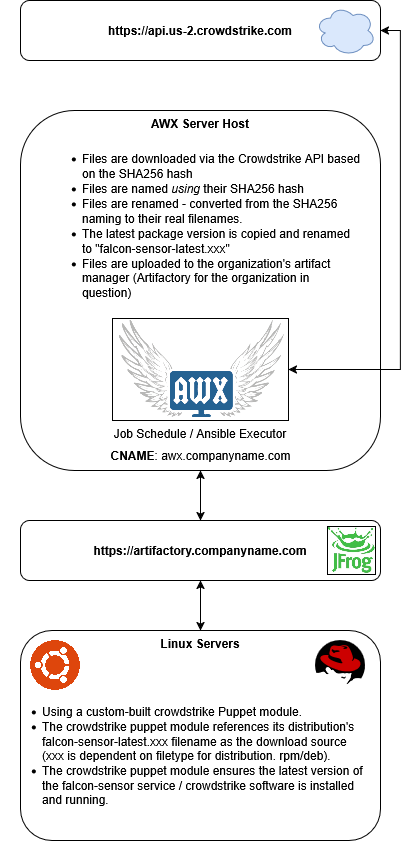

Overview
Installing Crowdstrike on Linux is a well-documented process.
The manual setup instructions can be found on the following page - provided to us by the vendor: https://www.crowdstrike.com/blog/tech-center/install-falcon-sensor-for-linux/
However, my client wanted to automate this process throughout their environment so that it was easier to do on multiple VMs/Servers.
Architecture Diagram
Architecture Explanation
Crowdstrike consisted of two key pieces in the environment where I built it. These both needed to function properly or the software wasn't effective.
- The sensor download process from the vendor website. This artifact was then installed on the organization's Artifact location (Artifactory)
- This was done using Ansible / AWX and a scheduled job that ran each week.
- The sensor installation process on Linux systems.
- This was done using Puppet. The version of Puppet was dependent on the Operating System(s) we were installing to. (Puppet 4, Puppet 6, and Puppet 8 were in-use)
Installation Steps & Code
AWX
Code for this is not presently being published on GitHub. Doing so risks copyright infringement.
Puppet {4, 6, 8}
Code for this is not presently being published on GitHub. Doing so risks copyright infringement.
Service Control
Once Crowdstrike is set up and working, a service gets installed on your server to ensure that it is protected and the application is functioning as expected.
The name of this service is falcon-sensor.
Administrators are able to perform standard service operations on this service using the following commands:
# Start the service:
sudo systemctl start falcon-sensor
# Stop the service:
sudo systemctl stop falcon-sensor
# Restart the service:
sudo systemctl restart falcon-sensor
# Check the service status:
sudo systemctl status falcon-sensor